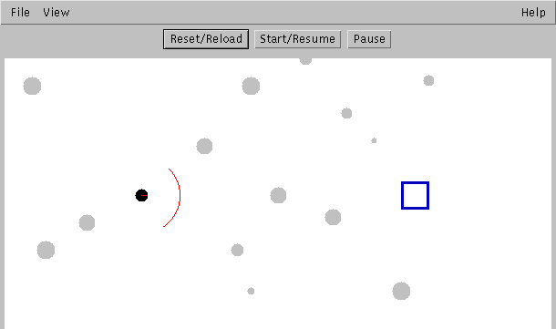
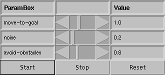

Chapter 2

The black circle on the left is a robot, the blue square on the right is a goal location and the gray circles are obstcles.
There should also be another window named "Parameters" with a few slider bars on your screen (it may be located underneath the other window). Locate this window, it looks like this:

Each slider represents the "gain" or importance of a behavior.
a. Click the "Start" button on the Parameters window. What happens?
b. What happens if you set the slider bar for avoid obstacles to 0.0? Try it, but first click the "Reset" button.
c. Experiment with different values of the gain for noise. Describe the impact larger values of noise have on the robot's navigation.
What if, instead of moving to a goal location, we would like to have the robot search for something by wandering around the environment? Can that be accomplished by changing the gains on the behaviors in Excercise 1? Which values work best?
This exercise will show you why noise is sometimes an important component of a navigational strategy. Move to the directory tb/Domains/Book and run the exercise2.3 script. You should see two windows similar to the ones from exercise 1 above. Instead of multiple obstacles, there is only one; it is exactly between the robot and the goal.
a. Set the noise gain to 0.0, then start the robot. What happens? Why?
b. Set the noise gain to 0.2, then click "Reset" and then "Start." What happens? Why is the robot able to reach the goal?
c. What is the minimum value of noise that will enable the robot to reach the goal? What is the maximum value of noise that will enable the robot to reliably reach the goal?
In this exercise we will compare two strategies for behavior combination: vector summation and winner-take-all. Move to the directory tb/Domains/Book, and run the exercise2.4 script. You should see a picture similar to the one in exercise 1.
There should also be another window named "Parameters" with a few slider bars on your screen (it may be located underneath the other window). In addition to the sliders you have seen in Exercise 1, this window includes buttons to set the combination operator ("winner-take-all" and "vector sum").
a. Click the "start" button on the Parameters window. What happens? The behavior should be similar to what you saw in Exercise 1.
b. Reset the simulation (click the "reset" button), then select the winner-take-all combination operator by clicking on the "winner-take-all" button. Now restart the simulation. What happens? How does the robot's behavior differ from when the vector sum combination operator is used? c. If "winner-take-all" is selected, what happens if you set the slider bar for noise to be larger than the move-to-goal gain?